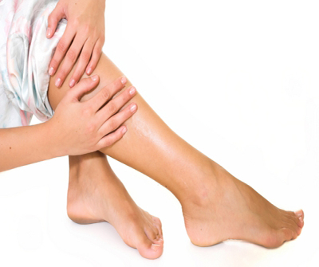

လက္ ဖဝါး၊ ေျခဖဝါး ၾကမ္း တမ္း ေျခာက္ ေသြ႕ ကြဲ႕အက္ ျခင္း

၁။ သံလြင္ ဆီကို သံပုရာရည္၊ လာဗင္ ဒါဆီ အနည္း ငယ္ ထည့္ျပီး ဆီမ်ားထူျပီး ခရင္ ထလာသည္ အထိ လႈပ္ ပါ။ ျပီး ေနာက္ ေျခဖဝါးတြင္ လိမ္း ျပီး ၁နာရီ ခန္႔ ထားပါ။
၂။ အိပ္ ယာမဝင္ ခင္ ဟင္း ရြက္ ဆီကို ေျခဖဝါးတြင္ လိမ္း ျပီး ေျခအိပ္ စြတ္ ပါ။ ေျခဖဝါး ေျခာက္ ေသြ႕မႈမ်ား သက္ သာ ေလ်ာ့ပါးလာပါလိမ့္ မယ္။
၃။ ေရခပ္ ေႏြး ေႏြးထဲမွာ ေျခ ေထာက္ စိမ္ ျပီး ေျခ ေထာက္ တုိက္ ေက်ာက္ တံုးႏွင့္ တိုက္ပါ။ ေရ ေျခာက္ ေအာင္ သုတ္ ျပီး ငွက္ ေပ်ာသီးကို ေျခ ေထာက္ တ ေလွ်ာက္ လိမ္း ပါ။ မိနစ္ ၂၀ခန္႔ ၾကာ ေသာအခါမွ ေရ ေဆးျပီး ေျခာက္ ေအာင္ သုတ္ ပါ။
၄။ အိပ္ ယာမဝင္ ခင္ ေျခ ေထာက္ ကို ေရ ေဆးပါ။
၅။ ေရမ်ားမ်ား ေသာက္ ပါ။
၆။ သက္ ေတာင့္ သက္ သာရွိ ေသာ ဖိနပ္ ကိုသာ စီးပါ။
၇။ ေျခကြဲျခင္း က နက္ ျပီးနာက်င္ လာပါက ဘက္ တီးရီးယား ကာကြယ္ ႏိုင္ ေသာဆပ္ ျပာကို သံုးျပီး ဘက္ တီးရီး ယား၊ မႈိဝင္ ျခင္းကိုတားဆီးပါ။ ကြဲ ေၾကာင္းမ်ားမွ ေသြးမ်ားထြက္ လာပါက ဆရာဝန္ ျပသင့္ ပါတယ္။
၈။ လက္ ဖဝါးမ်ား ၾကမ္း တမ္း ရင္ ေတာ့ ေထာပတ္ အနည္း ငယ္ ကိုလက္ ဖဝါး ေပၚလိမ္း ျပီး ႏွိပ္ နယ္ ေပးပါ။
၉။ သံလြင္ ဆီမၾကာခဏလိမ္း ေပးပါ။
၁၀။ ရာသီဥတု ၾကမ္း တမ္း ပါက လက္ အိတ္ ဝတ္ ဆင္ ပါ။ ပန္း ကန္ ေဆးျခင္း၊ အဝတ္ ေလွ်ာ္ ျခင္း၊ သစ္ ပင္ စိုက္ ပ်ိဳးျခင္း တုိ႔ ျပဳလုပ္ တိုင္း လက္ အိတ္ ဝတ္ ပါ။
၁၁။ လက္ ဖဝါးရဲ႕ အစိုဓာတ္ ကို ထိန္း ညိွ ေပးႏိုင္ ေသာ အုန္း ဆီ၊ သံလြင္ ဆီတို႔အျပင္ တျခား ေသာ အဆီတစ္ မ်ိဳးကို လိမ္း ျပီးမွ အိိပ္ ယာဝင္ ပါ။
အထက္ ပါနည္းလမ္း မ်ားက တစ္ ၾကိမ္ ျပဳလုပ္ ရံုႏွင့္ ထိ ေရာက္ မည္ မဟုတ္ ပါ။